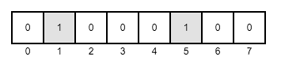

ByungJoon Lee
Wikipedia:
기존 데이터베이스 관리도구로 데이터를 수집, 저장, 관리, 분석할 수 있는 역량을 넘어서는 대량의 정형 또는 비정형 데이터 집합 및 이러한 데이터로부터 가치를 추출하고 결과를 분석하는 기술을 의미한다
Hadoop, Hive, HBase, Impala, Presto, Sentry, Kafka, Zookeeper etc ...
☆ Big Data에서!
망 분리, WEB & WAS & DB 3 tier 구성, 다운로드 제어, 계정 관련 제약, 접근 로그 보관 등
다양한 조건이 있습니다
그렇게 우리는 시작했습니다
Node.js로 개발을 시도한 이유
JDBC 함수를 호출 할 때 thread를 하나 만든 다음 그 thread에서 JDBC function call을 하고
비동기 방식처럼 바로 결과를 돌려 주고,
Node.js에서는 setInterval 등으로 java code를 지속적으로 호출하면서 thread status를 확인하고,
실행이 완료되면 결과를 가져와야 합니다
만약 실행 시간이 일정 시간 이상 걸리면 취소를 하고 timeout을 내는 코드도 추가해야 합니다, java로...
Async, Sync Java Method Call 외 Promise Java Method Call 기능이 추가되었으며 Generator + Promise를 이용하여 테스트한 결과 비동기 호출이 가능해졌습니다
https://thrift.apache.org/
Actionscript 3.0, c_glib, C++, CSharp, D, Dart, Delphi, Go, Graphviz, Haxe Framework, Haskell, Java,
Javascript, Node.js,OCaml, Perl, PHP, Python, Ruby
sh> brew install thrift
sh> thrift -r --gen js:node /apache-hive-1.1.0-src/service/if/TCLIService.thriftApache Hive 1.0 아래 버전을 사용하면 getLog가 없습니다1.0 이후에 getLog가 추가 되었습니다
gen-node 아래, getLog가 있습니다
vs
getLog로 받은 buffer를 해석하는 방식이 조금 달라요,
되돌려 받은 buffer 내에, nulls 값이 있고 이 nulls 값은 bit vector 형태로 null 값 인지 아닌지를 확인할 수 있는 값이 들어있습니다
HS2Util.prototype.getIsNull = function getIsNull (buf, index) {
var bufIdx = (index !== 0) ? Math.floor(index / 8) : 0;
var pos = index % 8;
return !!(buf[bufIdx] & this.BITMASK[pos]);
};https://github.com/imjuni/jshs2
kerberos, plain sasl 등과 같은 인증 수단을 말합니다
Impala가 충분히 성장하지 않아 Persistent Connection 방식으로
연결을 유지하면, Connection이 완전히 정리되지 않고 leak이 되는 문제가 있었다
개인정보보호법 때문에 사용자는 가상머신에서 접속하는데,
보통 가상머신을 종료하지 않고 연결을 끊기만 하기 때문에 쿼리를 실행하고 결과를 보다가
가상머신과 연결을 끊으면 서버에서는 Connection이 계속 남아서 leak이 된다
제가 만든 것이 Galleon 입니다 ;)
| 이름 | 장점 | 단점 |
|---|---|---|
| SlickGrid.js |
|
|
| Handsontable 0.10.5 |
|
|
| Handsontalbe latest |
|
|
| DataTable.js |
|
|
| 이름 | 장점 | 단점 |
|---|---|---|
| SlickGrid.js |
|
|
| Handsontable 0.10.5 |
|
|
| Handsontalbe latest |
|
|
| DataTable.js |
|
|